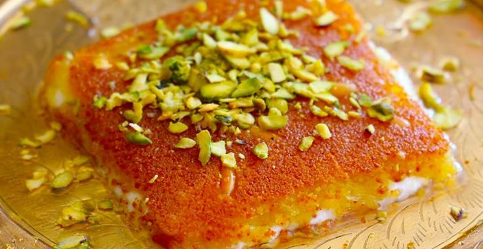

Home
Kunafeh Recipe

Description
Kunafeh is a beloved Middle Eastern dessert made with layers of crispy shredded pastry and soft melted cheese, soaked
in fragrant sugar syrup. Its rich texture and sweet flavor make it one of the region's most iconic treats.
Traditionally served warm and topped with crushed pistachios, kunafeh offers a perfect balance of crunchiness and
creaminess. It is enjoyed on special occasions, family gatherings, and as a delicious dessert after meals.
Ingredients
- 500 g shredded kunafa pastry
- 250 g unsalted butter, melted
- 400 g mozzarella or akkawi cheese, shredded
- 1 cup sugar
- 1 cup water
- 1 tsp lemon juice
- 1 tsp rose water or orange blossom water (optional)
- 2 tbsp crushed pistachios for garnish
Steps
- Preheat the oven to 180°C (350°F).
- Prepare the sugar syrup by boiling the water and sugar together for 8–10 minutes. Add the lemon juice and rose
water, then let it cool completely.
- Mix the shredded kunafa pastry with the melted butter until evenly coated.
- Press half of the buttered pastry into a greased baking pan to form the base layer.
- Spread the shredded cheese evenly over the pastry, leaving a small border around the edges.
- Cover the cheese with the remaining pastry and gently press it down.
- Bake for 30–40 minutes, or until the top is golden brown and crispy.
- Remove the kunafeh from the oven and immediately pour the cooled sugar syrup evenly over the hot pastry.
- Allow it to rest for a few minutes so the syrup is absorbed.
- Garnish with crushed pistachios and serve warm.